Fourteen figures from the field manual, in document order. What the equipment is, what it does, why it costs what it costs, and where a strategic account executive actually changes the outcome.
Read this section even if you skip everything else. It is the mental model the rest of the packet hangs on.
The single most useful thing to get right early is where your scope starts and stops. Get this wrong in a meeting and you will either claim something you can't deliver or concede something you own.
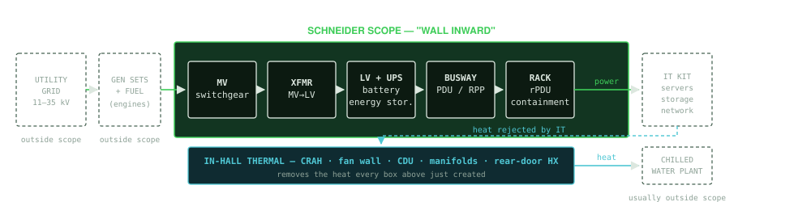
Generators. Schneider sells the switchgear, paralleling controls and transfer switches around them, not the engines. Those are Caterpillar, Cummins, Rolls-Royce mtu. Don't claim the engine.
Chilled water plant. Chillers, pumps, cooling towers. Schneider does play here through Uniflair, but in the wall-inward framing it's out — and the model excludes it. Know which conversation you're in.
The utility side. Interconnection queues, substation build, grid capacity. Enormous strategic topic for Equinix, largely not your product — but it's the thing keeping their executives awake, so be able to discuss it intelligently without pretending to sell it.
The IT equipment. Your old world. Now the customer's customer's problem. Its power draw and heat profile are very much your problem.
One continuous chain from the property line to the server's power supply. Nine stages. Learn them in order and the vocabulary organizes itself.
A one-line (or single-line) diagram is the drawing every electrical conversation happens over. It collapses three-phase power into a single line and shows the sequence of protection and transformation from source to load. If you learn to read one document in this job, make it this one.
Below is the canonical data center one-line, simplified to the level you need. Read it left to right: voltage steps down, and the number of paths multiplies.
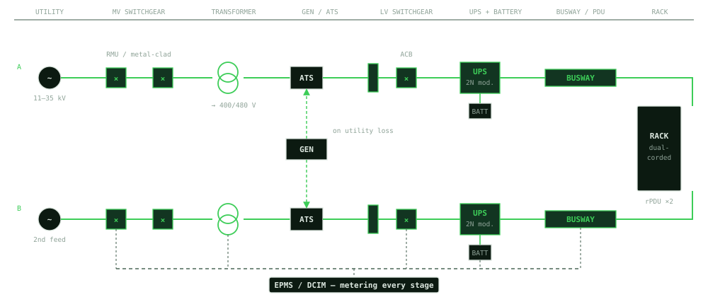
| Stage | What it actually does | Schneider / APC lines | What to listen for |
|---|---|---|---|
| MV switchgear | Receives the utility feed at 11–35 kV. Protects, isolates and sectionalizes the MV bus so a fault on one section doesn't take the building. Ring-main units let you feed from two directions. | Premset, SM6, GM-series metal-clad, EvoPacT breakers | "Ring main", "metal-clad vs metal-enclosed", "arc-flash rating", SF6 vs shielded-solid-insulation |
| Transformer | Steps MV down to usable 400 V (Europe/APAC) or 480 V (Americas). Cast-resin dry types dominate indoors — no oil, so no fire suppression and containment burden. | Trihal (cast resin), Minera (oil-filled) | "Dry-type vs oil", "k-factor", "no-load losses", and above all lead time — this is the longest-lead item on the job |
| Generator + transfer | Backs the whole building on utility loss. Schneider supplies the paralleling switchgear, ATS and controls; another vendor supplies the engine. | ASCO-class transfer gear, paralleling switchgear, controls | "ATS vs closed transition", "black building test", "N+1 gen" |
| LV switchgear | The main low-voltage distribution board. Air circuit breakers on the big feeds, molded-case downstream. Everything after this is 400/480 V. | Masterpact MTZ (ACB), ComPacT / PowerPacT (MCCB), Blokset, Okken | "Form 4b separation", "selectivity / discrimination", "withdrawable" |
| UPS + battery | Bridges the seconds between utility loss and generator pickup, and conditions power continuously. The single biggest line item in the stack. | Galaxy VX (large), Galaxy VL, Galaxy VS; VRLA or Li-ion strings | "Double conversion vs eco-mode", "runtime", "Li-ion vs VRLA", "modular / scalable" |
| Busway / PDU / RPP | Gets power across the hall and down to the rack. Overhead busway lets you tap power anywhere along its length — which matters enormously when rack densities keep changing. | Canalis busway, EcoStruxure busway, PDUs and remote power panels | "Busway vs whips", "tap-off box", "RPP has no transformer, a PDU does" |
| Rack PDU | The strip inside the cabinet. Metered, switched, or outlet-metered — and the metering is what lets a colo bill for power accurately. | APC rack PDUs (metered / switched / outlet-metered) | "Per-outlet metering", "3-phase rPDU", "billing-grade accuracy" |
| Rack + containment | The cabinet and the hot/cold aisle separation around it. Smallest dollar line, but it's where airflow discipline is won or lost. | APC NetShelter, hot/cold aisle containment systems | "Containment", "blanking panels", "bypass air" |
Use these to recognize what someone says to you, not to recite. Portfolios get renamed, regional naming differs (US metal-clad naming in particular), and being corrected on your own employer's product line is a bad look. Confirm the current lineup with your sales engineer in week one — then you own it.
This is the highest-leverage concept in the packet. Topology is the single biggest determinant of how much equipment a megawatt needs — and therefore of what that megawatt is worth to Schneider. Two facilities with identical IT load can differ by nearly double in electrical content depending on how they're configured.
The notation is simple once you see it drawn. N is exactly what the load requires and nothing more.
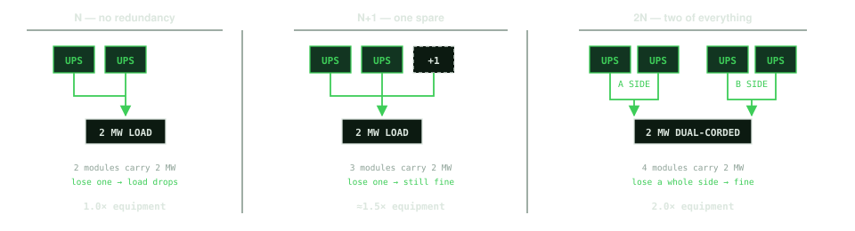
Uptime Institute's Tier system is the industry shorthand. Two of the four matter in practice:
Tier III — concurrently maintainable. You can take any single component out for service without dropping the load. This is the commercial colo baseline.
Tier IV — fault tolerant. Any single unplanned failure is survived automatically. Requires physically separate, compartmentalized paths. Meaningfully more expensive.
Tiers I and II are legacy and you will rarely meet them in a modern colo build.
Concurrently maintainable means you survive the planned event. Fault tolerant means you survive the unplanned one. That is structurally the same distinction as immutable versus indelible — surviving the first event is not the same as being protected against the next one. You already know how to have this conversation; only the substrate changed.
It's also Chris's own example: the site that flips to generator, the failover works perfectly, and now there is no redundancy left and the C-suite is on the phone. The system succeeded. The position is terrible. Most buyers specify to the first event; the strategic conversation lives in the second.
Every watt delivered becomes a watt of heat. There are two ways to move it — air and liquid — and the industry is mid-transition between them. That transition is most of why this job exists right now.
Start with the physics, because it explains everything downstream: water carries roughly three thousand times more heat per unit volume than air. Air worked fine when a rack drew 3 kW. At 100 kW you would need a wind tunnel. That single fact is why liquid cooling stopped being exotic.
The diagram below shows both paths in the same hall — because that is the real situation. Almost nothing is all-liquid. Halls are hybrid, and the interesting engineering is at the junction.
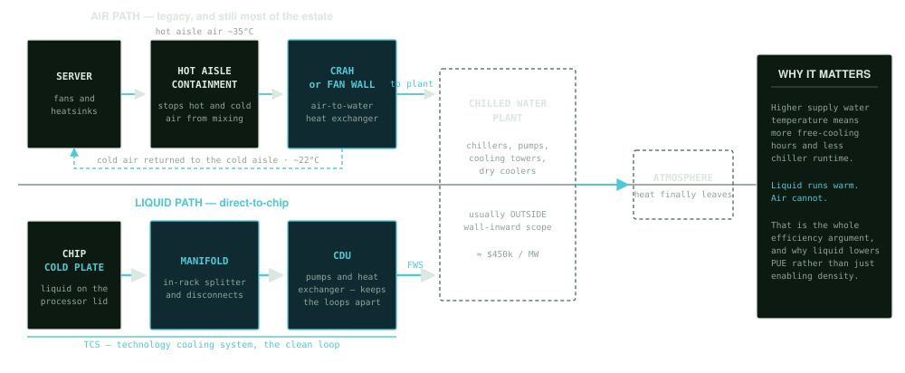
That analogy is precise rather than loose, and it's worth holding onto. A transformer sits at a boundary and does two jobs: it takes messy grid power and delivers clean power at the voltage the load needs, and the two sides are physically isolated. Energy crosses. Electrons don't.
A coolant distribution unit does exactly that for liquid. It pumps the clean loop that goes to the chips, and passes heat into the building's loop through a plate heat exchanger. Heat crosses. Water doesn't.
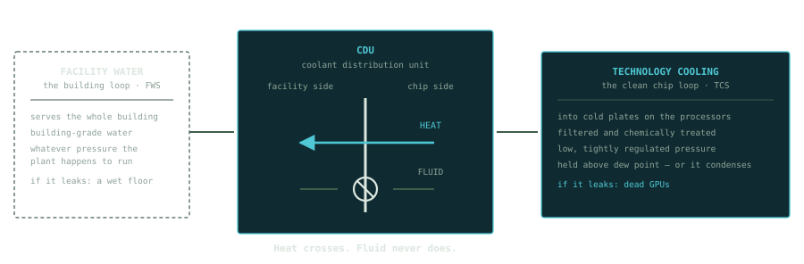
Three more things worth knowing. It comes in sizes — in-rack (a few racks), in-row or "sidecar" (a cabinet beside the row, the one you'll hear most in AI builds), and room-level. L2L versus L2A is only a question of what it rejects heat into. And once you own the CDU you tend to own the manifolds, the loop and the service contract behind it.
Rejects into facility chilled water. Higher capacity, needs a building water loop present. The new-build default.
Rejects into room air instead. Lower capacity, but it works in a hall with no water. This is the retrofit product.
Bolts onto the back of an existing cabinet. Takes a rack from ~15 kW to 40–60 kW with no server modification at all.
Rear-door heat exchangers and liquid-to-air CDUs matter far more than their line item suggests, because they are the only way to add density to an estate that already exists. Equinix has 280-odd operating IBX sites and its own 10-K says power, not space, is the limiting factor. Every one of those halls is a candidate for a density retrofit that requires no new building. New-build gets the announcements. The installed base is where an incumbent supplier compounds.
Rack density is the forcing function behind everything happening in this market. Here is the ladder, and which cooling technology is viable at each rung. Ranges are directional — real limits depend on airflow design, water temperature and how much engineering you throw at it.
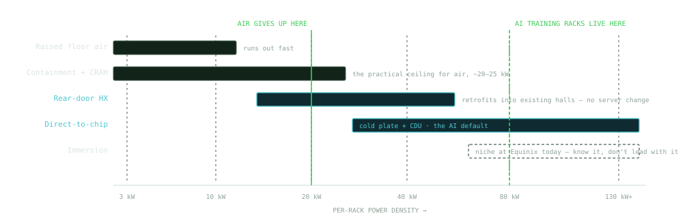
Two things that aren't a stage in either chain, but sit across all of them — and between them account for a tenth of the stack and most of the strategic argument.
A prefabricated skid or pod is the power train — switchgear, transformer, UPS, distribution — built and fully tested in a factory, shipped as a unit, and connected on site. Instead of thirty trades assembling components in a half-built building, you land a tested block and plug it in.
The reason this matters is not cost. Prefab is roughly cost-neutral. It matters because it compresses schedule and removes variance, and in a market where revenue starts on the energization date, schedule is money.
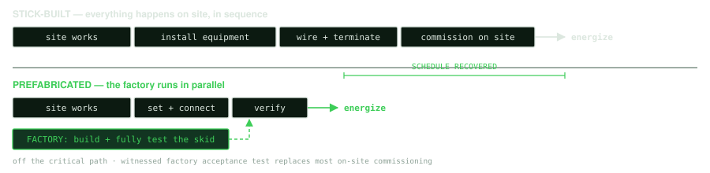
Marc Garner argues publicly and consistently against bespoke engineering and for repeatable reference designs. Prefab is the physical expression of that argument — you cannot prefabricate a snowflake. When he talks about standardization, this is the mechanism he means, and speed is the benefit he is selling.
It also reframes your HCA story correctly. You did not get HCA a custom architecture. You got them to raise a standard, and once it was the standard it applied across the estate. Told that way, the story runs with his thesis instead of across it.
The technology map, priced. This is the part that makes you dangerous rather than merely conversant.
Below is the wall-inward cost stack per critical IT megawatt, base case, from your own financial model. Read it as relative weight rather than as quotable pricing.
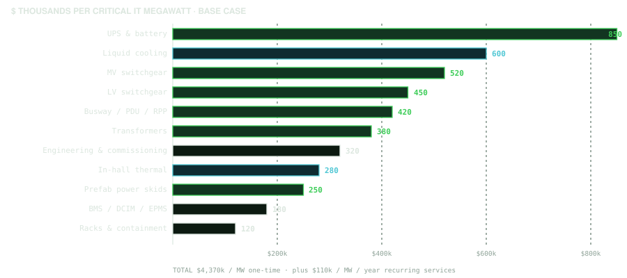
These figures are triangulated from public benchmarks (JLL, Turner & Townsend, Cushman & Wakefield) against Equinix's own disclosed $10.53m per megawatt for Atlanta 10x-1. That cross-check lands at 41.5% wall-inward share versus Schneider's published c.43% — two independent routes, 1.5 points apart. The stack is defensible. Share-of-wallet assumptions on top of it are not. Lead with addressable spend, not with modelled revenue.
Here is the lifecycle of a single data center phase, with the decision points marked. The thing to internalize: by the time a specification is issued, the decisions that determine efficiency, topology and vendor have already been made. An RFQ is where you find out whether you won, not where you win.
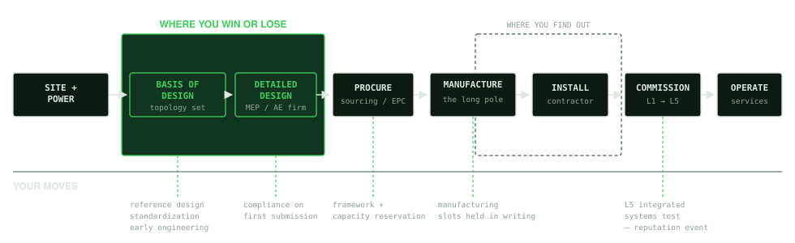
This is the most commercially useful single idea in the packet, and it is the reason a capacity agreement exists at all.
For most of this equipment, the order date — not the ground-breaking date — sets the energization date. Lead times on electrical plant now routinely exceed the construction schedule. A campus energizing in 2029 needs its transformer order placed in early 2027, which means the electrical architecture has to be settled during 2026.
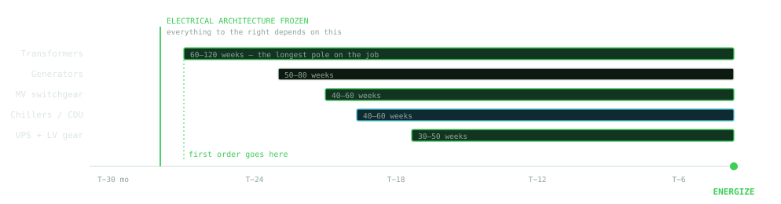
"A campus energizing in 2029 needs its transformer order placed in Q1 2027, which means the electrical architecture has to be settled during 2026." Say that to an Equinix construction lead and you are immediately in a different conversation than every other vendor in the queue — because you have just described their problem, not your product.
Two structural facts about how this business reaches the customer. First, roughly 45% of what Equinix specifies is bought by someone else — an EPC or contractor — even when Equinix chose the product. Second, no single person owns the decision.
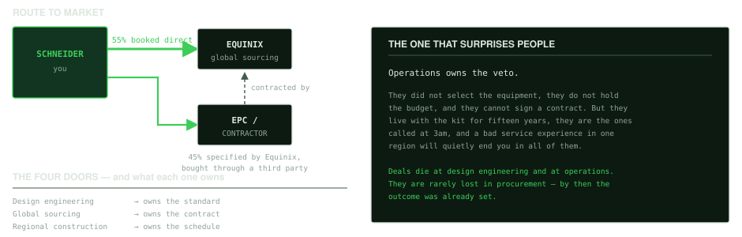
The last mile of a data center project, where everything sold upstream either works or doesn't.
Commissioning is the process of proving the building does what the drawings said it would — and it is the only part of the job where your product is tested rather than described.
Five levels, running from a factory floor to a fully loaded data hall:
| Level | What happens | Where |
|---|---|---|
| L1 | Factory testing and witness. Major equipment — UPS, switchgear, generators, chillers — built and tested before it ships. The customer or their Cx agent attends. | Factory |
| L2 | Delivery and static checks. Equipment arrives, is inspected against the submittal for transit damage and correct build, installed, and verified point to point. Nothing is energized. | Site |
| L3 | Functional testing. Each system energized and run on its own. The UPS transfers to battery, the generator starts and takes load, the breaker trips when it should. | Site |
| L4 | Integrated testing within a discipline. The whole electrical train transfers together. The whole cooling loop runs together. Systems stop being components. | Site |
| L5 | Integrated Systems Test. The entire facility under artificial load from load banks, with utility failure simulated. Everything has to ride through, together, first time. | Site |
L5 is the one that matters. It is the only test that recreates the actual failure the whole building exists to survive, and it is run in front of everyone — owner, EPC, Cx agent, and every vendor whose equipment is in the chain. A supplier's reputation on a campus is made or lost in that room, and it carries to the next phase and the one after, because Equinix builds to a reference architecture.
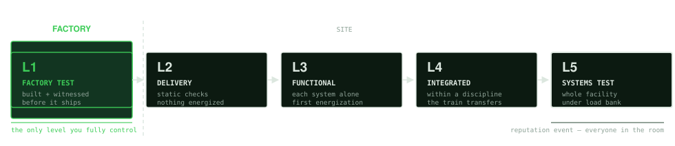
The five-level structure is the industry norm, but every owner draws the boundaries slightly differently and some split L4 and L5 further. Equinix's own definitions are the ones that count. That is a good early question, and asking it is a better signal than assuming.
Every piece of equipment on a site carries a tag, and that tag is the only thread connecting eight documents that are otherwise written by different companies at different times.
If the tag drifts anywhere along that chain, somebody spends weeks reconciling it — usually in the last month, when there is no time, and usually in front of the owner.
The unglamorous version of vendor quality is this: your factory paperwork arrives carrying the owner's tag convention rather than your own. Nobody thanks you for it. Everybody notices when it is wrong.
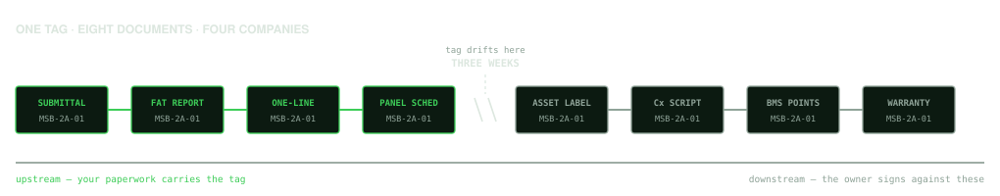
It looks like a documentation problem and it is actually a margin problem. Retesting because the paperwork does not match costs schedule, and schedule at this end of a project is the most expensive thing there is. A vendor who gets tags right is quietly cheaper to buy from, and the people who know that are the ones who sign the acceptance certificate.
Commissioning sits at the end of the schedule, which means it absorbs every delay that happened before it.
That single structural fact explains most of what is strange about how people behave at this stage. The energization date is fixed. The tenant move-in is fixed, and often contractual. The Cx window is the only elastic thing left, so it is what gets compressed — and it is the one part of the programme that genuinely cannot be rushed, because it is the part that proves the building is safe to occupy.
Three things follow, and they are worth knowing before you walk into that room.
Milestone payments are commonly tied to Cx completion. A Cx delay is not only a schedule problem for the owner, it is a cash problem for everyone in the chain.
A failed L5 can force re-test of things that already passed. One vendor's equipment can put an entire integrated test back on the calendar, and everyone in the room watches it happen.
Cx is the one phase where the owner, the EPC, the Cx agent, the design engineer and every equipment vendor are in the same building at the same time under pressure. It is the highest-visibility, worst-tempered moment of a project — and it is the best relationship-building opportunity in the entire lifecycle, because behaviour under that pressure is remembered for years.
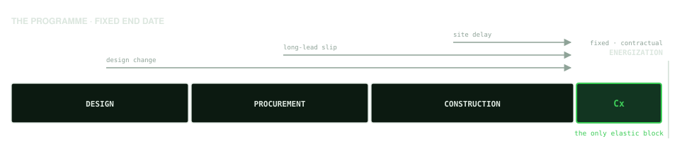
Prefabrication moves commissioning left. A factory-integrated skid arrives having already completed much of what would otherwise be L1, L2 and part of L3 work, tested in a controlled environment with the right instruments and no weather. That does not just shorten the site programme — it moves testing out of the compressed window and into one where a failure is cheap to fix.
That is a schedule-risk argument rather than a product claim, made to a customer whose real constraint is time.
"Prefabrication isn't primarily about speed of build. It's about doing your testing somewhere a failure costs a day instead of somewhere it costs a month."
Attending a factory witness test is normal. Attending an owner's L5 is a privilege extended by the owner, not a right. Ask; do not assume.
The words you need, the places to stop talking, and how to compress months of learning into weeks.
| Term | What it means | Why it comes up |
|---|---|---|
| One-line / single-line | The diagram showing power flow from source to load | Every electrical conversation happens over one |
| Critical IT load | Power actually delivered to IT kit, in MW — the unit everything is priced against | Distinguish from gross/facility load, which includes cooling |
| PUE | Total facility power ÷ IT power. 1.0 is perfect; good modern halls run 1.2–1.3 | The efficiency scoreboard, and it ties to Equinix's 2030 commitment |
| N, N+1, 2N | Redundancy topology — how much spare capacity beyond the load | Sets the equipment count, so it sets the deal size |
| Tier III / IV | Uptime Institute: concurrently maintainable vs fault tolerant | The resilience shorthand everyone uses |
| Concurrent maintainability | Service any component without dropping load | The commercial colo baseline |
| RMU | Ring main unit — MV switchgear fed from two directions | Standard at the MV entry point |
| ACB / MCCB | Air circuit breaker (big feeds) / molded-case (downstream) | LV switchgear conversations |
| Cast resin / dry-type | Transformer with no oil — indoor-safe, no fire containment burden | The data center default |
| Double conversion | UPS mode where power is always rectified and re-inverted — cleanest, least efficient | Versus eco-mode, which trades a transfer risk for efficiency points |
| Busway | Overhead power distribution you can tap anywhere along its length | Flexibility as densities change; versus fixed whips |
| PDU vs RPP | PDU includes a transformer; a remote power panel doesn't | People use them interchangeably and shouldn't |
| CRAH / CRAC | Computer room air handler (chilled water) / air conditioner (direct expansion) | CRAH dominates at scale |
| CDU | Coolant distribution unit — pumps and heat exchanger separating the chip loop from facility water | The gateway box for liquid cooling |
| TCS / FWS | Technology cooling system (clean chip loop) / facility water system (building loop) | The two loops a CDU sits between |
| RDHx | Rear-door heat exchanger — bolts to the cabinet, takes a rack to 40–60 kW | The retrofit path into an existing estate |
| Direct-to-chip / DLC | Cold plate on the processor lid; liquid removes heat at source | The AI-density default above ~40 kW |
| Approach temperature | Gap between the coolant supply temperature and what it's cooling | Smaller approach = more expensive plant |
| Delta-T | Temperature rise across the load | A wider delta-T moves the same heat with less flow |
| Free cooling / economizer | Rejecting heat using ambient conditions instead of running chillers | Why warmer supply water is the efficiency prize |
| L5 / IST | Integrated systems test — full load-bank commissioning of the whole facility | Where reputations are made; ask to attend one |
| Black building test | Killing utility power to prove the whole site rides through | The most consequential day of a build |
| Basis of design | The document fixing topology, efficiency targets and architecture | The document you must influence |
You said it yourself and it's the right instinct: you are not in the power industry today and shouldn't act like you know it all. That is not a weakness to manage — used deliberately, it is the most credible thing you can do in a room of engineers.
Here is the line. Everything in this packet is yours to use: what the equipment does, why topology drives cost, why lead time drives schedule, where the money sits, how a project runs. That is business literacy and you should sound fluent.
Stop here, every time:
"I know enough to know that's the right question and not enough to answer it well. Let me bring the engineer who owns it — and I'd like to be in that conversation because I want to understand it properly."
That answer does four things at once: it's honest, it demonstrates you know where the boundary is, it gets the right person into the account, and it signals you intend to learn rather than to delegate. Nobody has ever lost a deal by saying it. Plenty have lost deals by guessing.
And when the technical detail gets close to something confidential — a customer's architecture, another account's configuration — say the boundary out loud. Declining to answer is the better answer, and executives listen for exactly that instinct.
You said you learn by walking data centers and factories rather than in training rooms. Build the ramp around that.
Two IBX walks minimum, one with an Equinix operations lead rather than a sales counterpart. One Schneider factory — ideally where skids are integrated and factory tested. Sit in on one L4 or L5 commissioning if the calendar allows.
Attend a commissioning. Ask which sites have an integrated systems test scheduled and get into the room for one — ideally an L5, or a factory witness test if that comes sooner. It is the fastest way to understand what the equipment actually has to survive, and the fastest way to meet everyone who matters on a campus in a single day.
Name your sales engineer, your services lead, your supply chain contact and your regional counterparts in AMER, EMEA and APAC. Get the real lead-time table. Populate the calibration cell in the model with actual Equinix revenue.
Rewrite the account plan on internal data. Take a point of view on the reference design and the capacity framework. Have the design-engagement conversation with Equinix rather than the RFQ conversation.
Ask these of the operator, not the salesperson. The answers teach faster than any document, and asking them is itself the credibility.
You have a line you already use — that you need to be a student of the technology and of the standards. This packet is a start on the first half. The second half, what Equinix specifically buys from Schneider and to what standard, is the part you cannot get from outside the walls. Say that plainly rather than papering over it. Knowing precisely which half you're missing is a stronger position than pretending you have both.